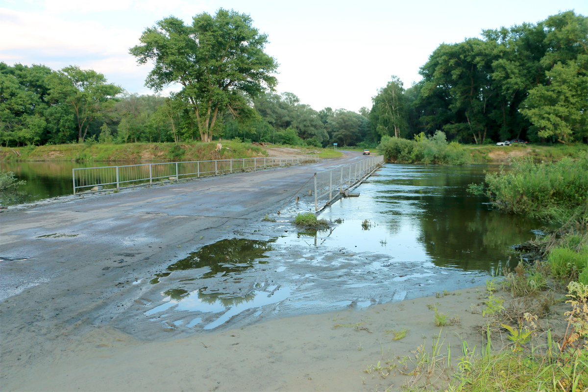
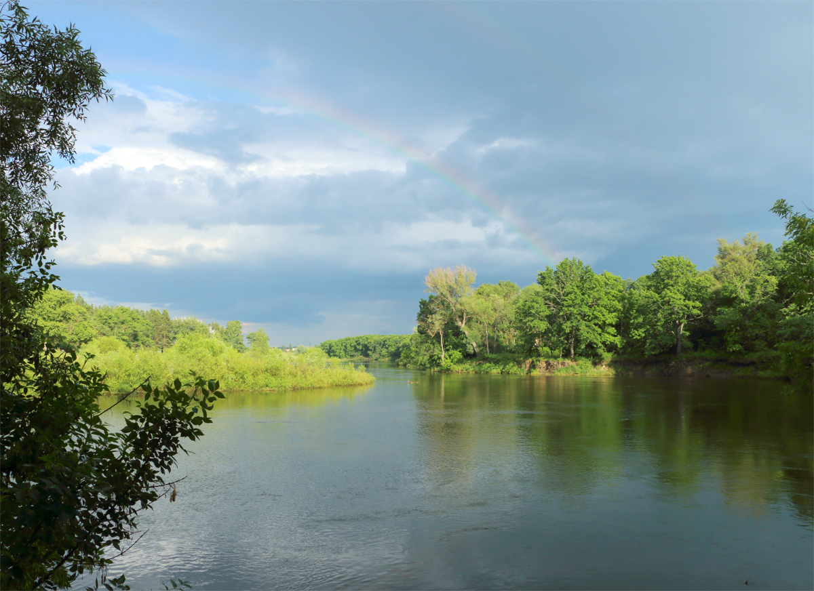

Вода, вода. Кругом вода.
Вторую неделю ждем погоды у Хопра. Уже не холодно, но льет каждый день. Вода в реке стоит высоко, когда смотришь на нее с берега, кажется, что асфальт дорог положен прямо на воду.

Рыбалка бедная. Ждем, когда природа вернется к норме. Одно удовольствие - свежий прохладный воздух.

Самое время вернуться к нашим бригантинам.